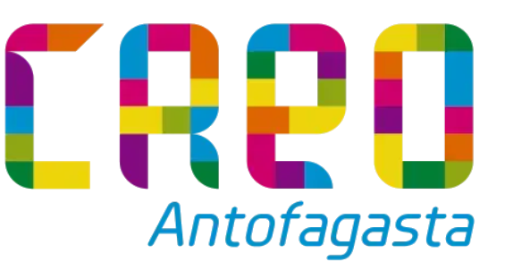
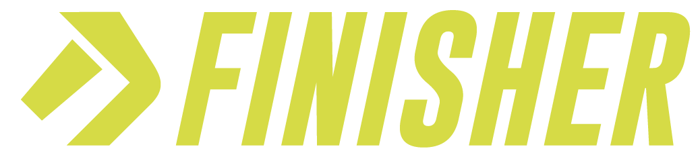
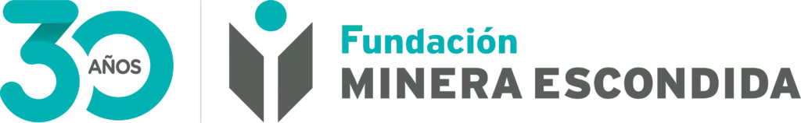
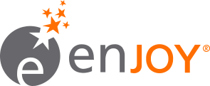
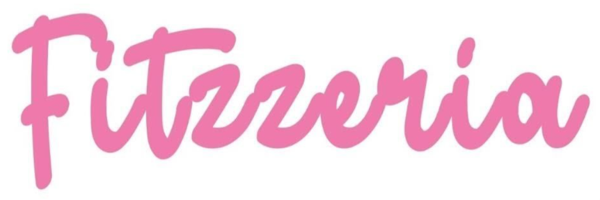
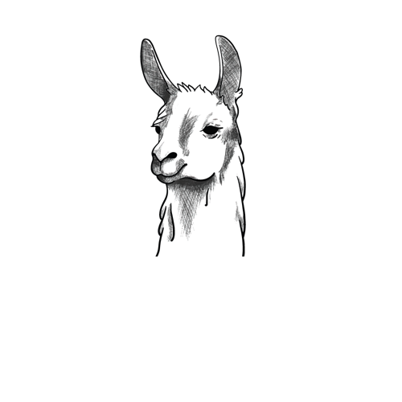
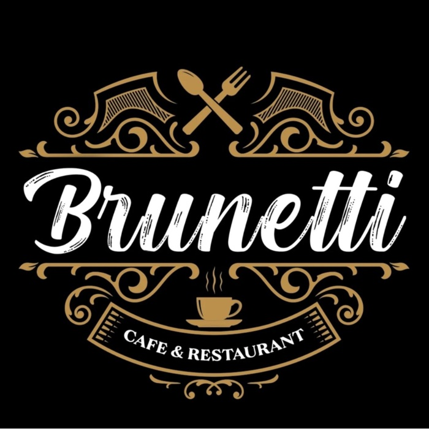

trabaja con nosotras
Lleva tu marca a la comunidad de mujeres que corre en Antofagasta. En persona, casi todos los fines de semana, y en redes.
- +4.000mujeres en nuestra comunidad
- Casi todoslos fines de semana corriendo juntas frente al mar
- 50 de 50cupos agotados en el social run del Enjoy
Por qué auspiciarnos
- Una comunidad que se junta de verdadNo somos solo seguidoras. Nos vemos en persona casi todos los fines de semana, y ahí tu marca se prueba, se vive y se conversa.
- Mujeres activas de AntofagastaEntrenan, se cuidan y buscan marcas que las acompañen. Si tu marca habla de deporte, bienestar o vida sana, este es tu público.
- En la corrida y en redesTu marca está en el punto de encuentro y también en lo que publicamos antes, durante y después de cada social run.
- Aportas a la ciudadApoyas el deporte y los espacios seguros para mujeres en el borde costero de Antofagasta.
Cómo podemos trabajar juntas
Cada alianza la armamos a tu medida. Estas son algunas ideas para partir.
- Social run con tu marcaAuspicia una corrida y conecta con la comunidad en persona.
- Activación en terrenoLleva tu marca, tus productos o tu equipo al punto de encuentro.
- Contenido en redesPublicaciones colaborativas para contar lo que estamos haciendo juntas.
Colaboramos con







- tu marca acá
Tu marca en el próximo social run
Escríbenos por Instagram, cuéntanos qué tienes en mente y te mandamos una propuesta.
Trabaja con nosotras o escríbenos a socialrunantofa@gmail.com